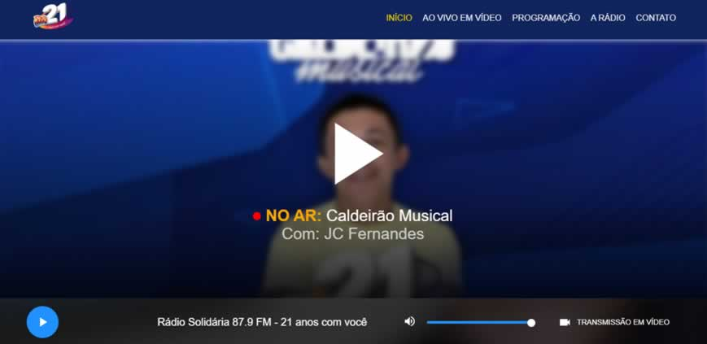
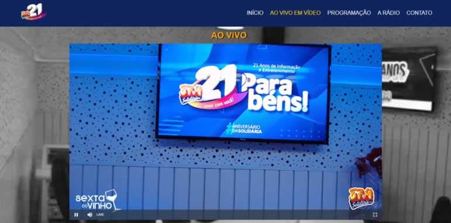
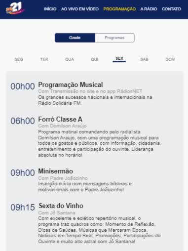
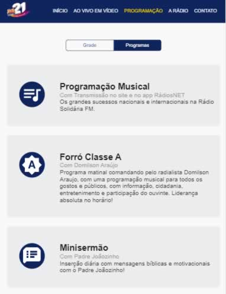
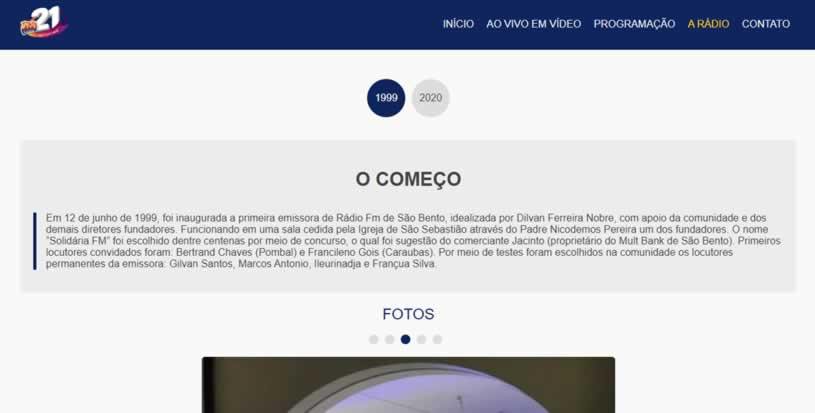
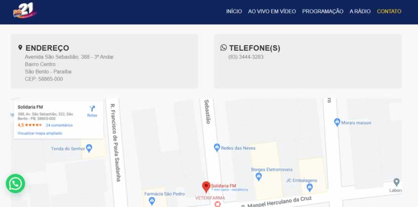

Página Inicial com player de aúdio 100% personalizado e funcional
A página principal do site da rádio solidária conta com um player de aúdio diferenciado, rápido, leve, veloz e preciso, isso porque foi desenvolvido utilizado o que há de mais recente na tecnologia javascript, o stream de aúdio da rádio solidária conta com suporte a diversos browsers.


Sistema de transmissão em vídeo ao vivo
Com o advento das novas tecnologias, a rádio solidária inovou e passou a transmitir a sua programação em vídeo, além de contar com o popular sistema de stream de aúdio, agora conta com este novo recurso, e os ouvintes poderão assistir os seus programas favoritos ao vivo.
Grade de programação completa e moderna
A grade de programas da rádio solidária FM 87.9 conta com um layout moderno e rápido, a grade foi toda desenvolvida utilizando recursos avançados de javascript (ECMA Script 6), com uma navegação simples, os ouvintes da rádio poderão saber de toda a programação e dos programas da rádio. Através do site da rádio, os internautas poderão saber o nome de cada programa, a descrição, apresentador e o horário que começa cada programa.


História da rádio
Página que exibe a história da rádio solidária, como também um painel de slides, mostrando imagens do estúdio da rádio solidária que é um dos estúdios de rádio mais modernos do estado da Paraíba.


Sistema de contato com opção via WhatsApp
A página de contato, conta com a novidade onde os ouvintes podem entrar em contato com a rádio diretamente pelo whatsapp, como também os ouvintes poderão saber onde a rádio está localizada, tanto visualmente diretamente no site, como também via google maps que está incorporado no site.
Tecnologias utilizadas
Para o desenvimento deste site foram utilizadas as seguintes tecnologias: PHP 7.2 com o gerenciador de dependências Composer, HTML5, CSS3 com enfase no flex-box e css animation keyframes, javascript utilizando recursos do Ecma Script 2015 e 2016, servidor web Apache com SSL ativo, por fim, foi utilizado o padrão de arquitetura MVC(Model View Controller) adotado amplamente no mundo inteiro.
PHP
HTML5
CSS3
JS